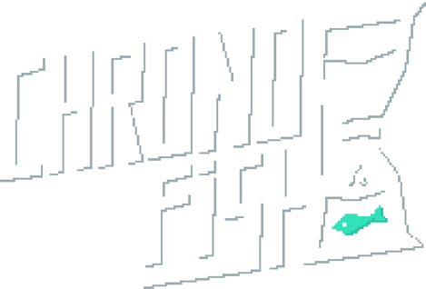
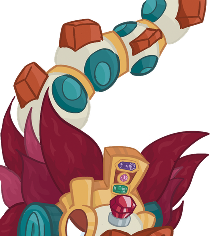

A time-travelling fish who can only parry.


Chrono Fish
Top-Down Roguelike / Unity C#2023 - 2024
Chrono Fish is a pixel-art top-down roguelike where the protagonist can only dodge and parry.
I worked as Game and Level Designer, defining the metrics behind the procedural temple and tuning the core parry timing.
Task Overview
- Defined level metrics driving coherent procedural map generation.
- Tuned the parry window against enemy attack timings.
- Designed room threat density so every space is beatable without attacking.
- Balanced the scoring system to reward cleaner parries.
My Contributions
Removing the attack button forces all the challenge into timing and enemy reading. Every room had to be honestly beatable with dodge and parry alone, which left nowhere for sloppy design to hide.
- Level metrics for procedural generation Defined enemy approach distances, parry windows and threat density per room, then drove the temple's procedural maps from those metrics instead of purely aesthetic rules.
- Parry timing Iterated the parry window against enemy attack timings until failing felt like a late decision by the player, not an unfair imposition by the system.
- Encounter design Balanced room composition so every space is solvable without dealing direct damage.
- Scoring balance Tuned the score to reward cleaner, less frequent parries, so the mechanic and the reward system tell the same story about mastery.
What I learned
Designing around a hard constraint demands a discipline a wide mechanics kit does not. It was also my first real procedural generation project, and badly defined level metrics show up much faster there than in a hand-crafted level, because the mistake repeats in every generated map.